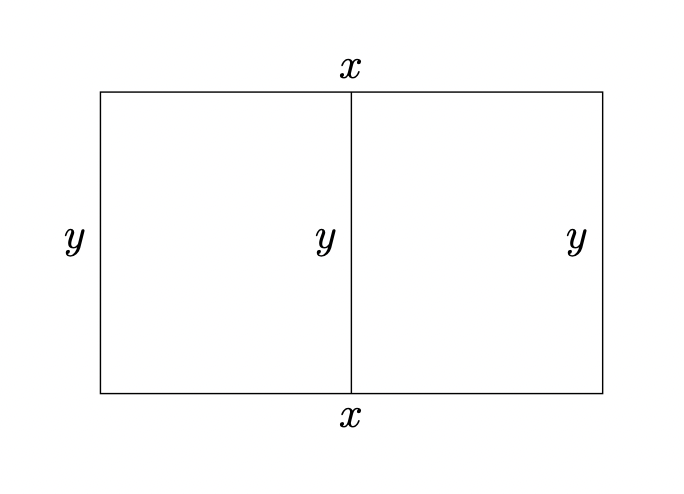

Goal: Solve classic optimization problems, including the Farmer-Enclosing-Pen, Cylinder/Box, and Inscribed Figures, by maximizing or minimizing functions under given restrictions.
Guidelines for Optimization Problems
- Read and Organize: Read carefully, identify variables, and organize info with a picture.
- Objective Function: Identify the function to be optimized. Write it in terms of the variables.
- Constraints: Identify restrictions and write them as equations.
- Eliminate Variables: Use constraints to write the objective in terms of one variable.
- Interval of Interest: Find the physical domain (e.g., lengths must be positive).
- Verify: Use methods of calculus to find the absolute maximum or minimum value of the objective function on the interval of interest. If necessary, check the endpoints.
Example Problem 11.1: The Divided Pen
A farmer has 400 feet of fencing to build a rectangular pen. The pen needs to be in the shape of a rectangle with a straight vertical divider in the middle that separates the pen into two congruent rectangles. What is the maximum possible area inside the pen?

Solution: Let \(y\) be the length of the vertical divider (and the two vertical ends) and \(x\) be the total horizontal length.
Interval: Since \(x > 0\) and \(y > 0\), we have \(\frac{400}{3} - \frac{2}{3}x > 0 \implies x < 200\). Interval: \((0, 200)\).
| Interval | \((0, 100)\) | \(x = 100\) | \((100, 200)\) |
|---|---|---|---|
| \(A'(x)\) | \(+\) | \(0\) | \(-\) |
| \(A(x)\) | Increasing \(\nearrow\) | Absolute Max | Decreasing \(\searrow\) |
Example Problem 11.2: Pens Against Barn
A farmer plans to make four identical and adjacent rectangular pens against a barn. Each with an area of \(100\text{ m}^2\), what are the dimensions of each pen that minimize the amount of fence that must be used?
Solution: Fencing 5 segments of length \(x\) and 4 segments of length \(y\).
Interval: \(x \in (0, \infty)\)
| Interval | \((0, 4\sqrt{5})\) | \(x = 4\sqrt{5}\) | \((4\sqrt{5}, \infty)\) |
|---|---|---|---|
| \(L'(x)\) | \(-\) | \(0\) | \(+\) |
| \(L(x)\) | Decreasing \(\searrow\) | Absolute Min | Increasing \(\nearrow\) |
Example Problem 11.3: Open-Top Box
A rectangular box has width twice the length (no top). If surface area is \(400\text{ cm}^2\), find the height of the box with the largest volume.
Solution: Let length = \(l\), width = \(2l\), and height = \(h\).
Interval: \(l \in \left(0, \sqrt{200}\right)\).
| Interval | \(\left(0, \frac{10\sqrt{6}}{3}\right)\) | \(l = \frac{10\sqrt{6}}{3}\) | \(\left(\frac{10\sqrt{6}}{3}, \sqrt{200}\right)\) |
|---|---|---|---|
| \(V'(l)\) | \(+\) | \(0\) | \(-\) |
| \(V(l)\) | Increasing \(\nearrow\) | Absolute Max | Decreasing \(\searrow\) |
Example Problem 11.4: Cylindrical Barrel
A cylindrical barrel is to be made that has a volume of \(6\pi\text{ ft}^3\). The material for the top and bottom cost 4 dollars/ft\(^2\) and the material for the side costs 6 dollars/ft\(^2\). Find the radius of the barrel that will minimize the cost of production.
Interval: \(r \in (0, \infty)\)
| Interval | \(\left(0, \sqrt[3]{\frac{9}{2}}\right)\) | \(r = \sqrt[3]{\frac{9}{2}}\) | \(\left(\sqrt[3]{\frac{9}{2}}, \infty\right)\) |
|---|---|---|---|
| \(C'(r)\) | \(-\) | \(0\) | \(+\) |
| \(C(r)\) | Decreasing \(\searrow\) | Absolute Min | Increasing \(\nearrow\) |
Example Problem 11.5: Inscribed Triangle
What is the largest area of an isosceles triangle inscribed in a circle of radius 1?
Variables: \(x\) = distance center to base, \(y\) = half-base. Interval: \(x \in (-1, 1)\).
| Interval | \((-1, 1/2)\) | \(x = 1/2\) | \((1/2, 1)\) |
|---|---|---|---|
| \(A'(x)\) | \(+\) | \(0\) | \(-\) |
| \(A(x)\) | Increasing \(\nearrow\) | Absolute Max | Decreasing \(\searrow\) |